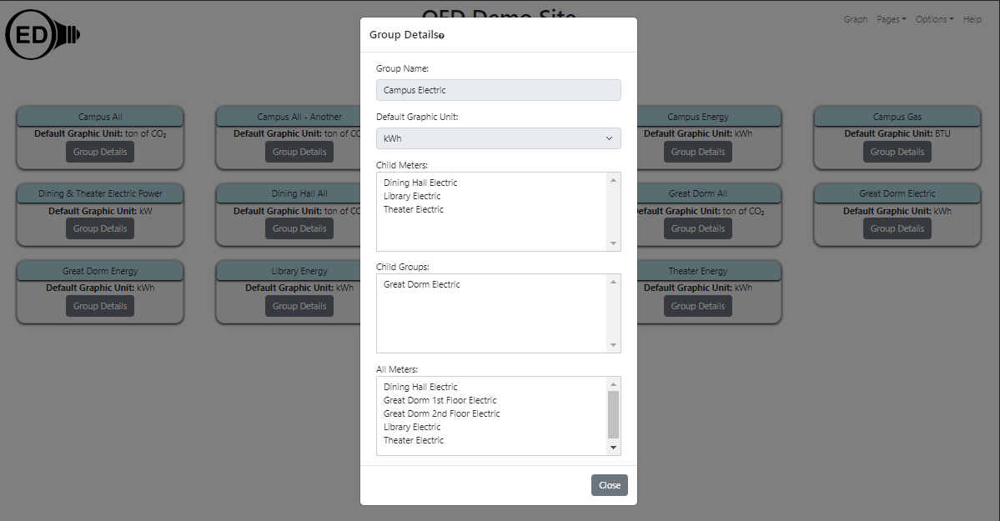
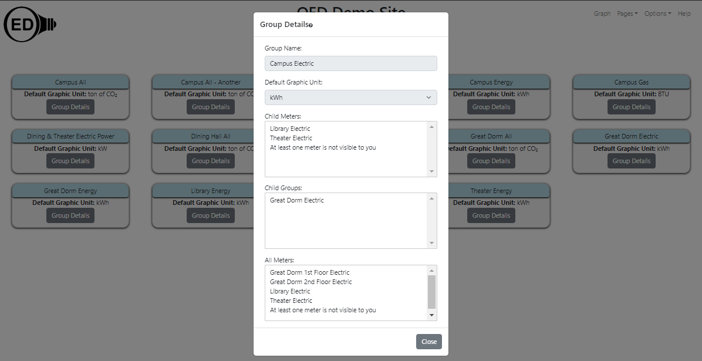

Groups aggregate data as explained on the group graphing help page. To understand what data is included in a group, the groups page is available.
Click on the "Groups" page choice (see Page Choices for information on doing this). Once done, you will see what is in the next figure (for this demo site).
This page gives an overview of all the groups that includes the name and the default graphing unit. For example, the "Campus All" group has a default graphic unit of "ton of CO2".
If you click on The "Group Details" button for any group then additional information is shown for that group. For example, the result of clicking the "Group Details" button for the group "Campus Electric" is shown in the following figure:

The popup gives the following information:
Clicking the "Close" button will take you back to the overview page for groups.
If a group includes a meter that is not visible to one visiting the site then that will be indicated by replacing all hidden meters with "At least one meter is not visible to you" at the bottom of the list. In the previous example, if the "Dining Hall Electric" meter is not visible then the details popup would have shown the following:

Similarly for groups that are not visible, you will see the message "At least one group is not visible to you".
Admins can see other details about groups as explained on the admin groups help page.